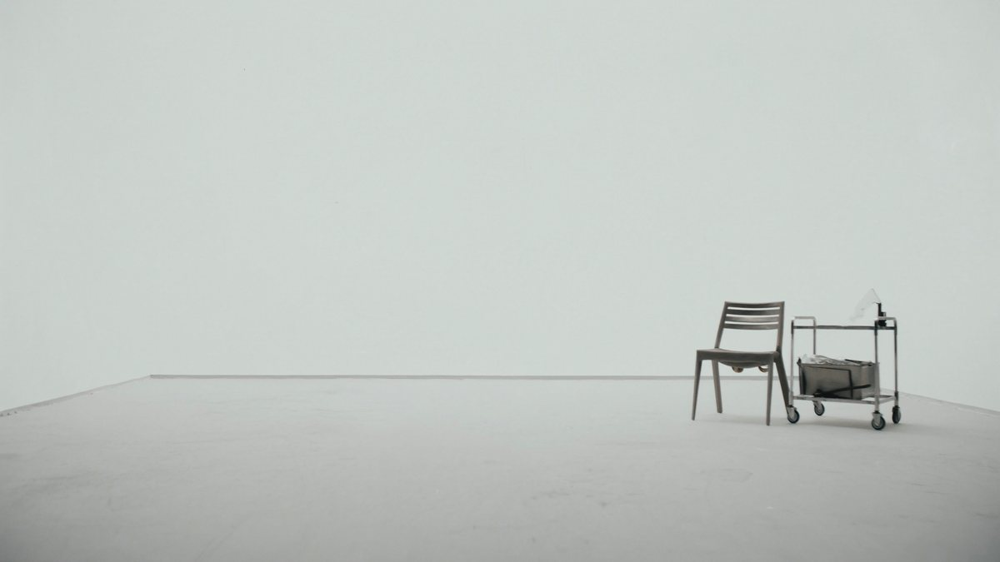
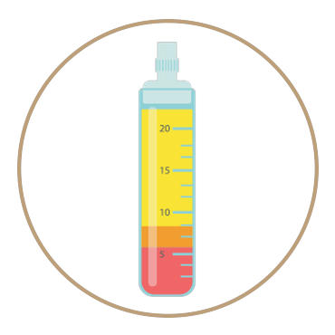

Every treatment.
One protocol library.
Treatments here are rarely booked alone. Each one below is an instrument — your plan is the combination, sequenced after diagnostics.
Platelet Rich Plasma
The treatment the clinic was built around, and the layer beneath almost everything else on this page.

Every treatment we offer
Which of these do you need?
Every plan starts with diagnostics, and the treatments above are combined and sequenced around what the evidence shows.
Lift from ultrasound, resurfacing from fractional laser, and plasma to carry the collagen response between sessions.
Analysis first. Restoring a follicle that is still alive is a different problem from replacing one that isn't.
Skin below the neck responds to the same logic — it simply needs more depth, more energy and more patience.
Speak to a practitioner
Consultations are booked by our team, not by an algorithm. Tell us what you'd like to address and we'll call you back to arrange a time with the right practitioner.